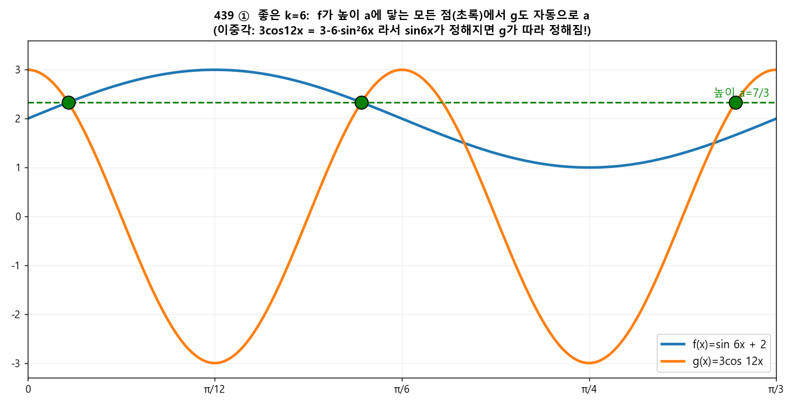
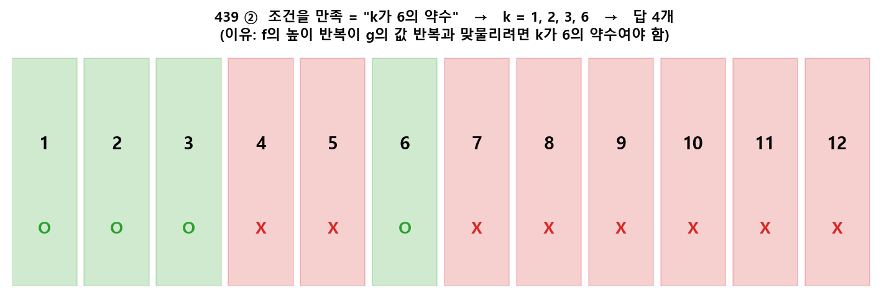

🧩 q439 ⭐ 최고난도·빈출 (평가원 기출)¶
단원: 삼각함수 — 교점 \(y\)값과 레벨집합 포함조건 · 정답: ② 4 (\(k=1,2,3,6\))
🔗 원본 (sources, 불변 — 링크만)¶
{kind=link}
🎯 문제¶
\(-2\pi\le x\le2\pi\), \(f(x)=\sin kx+2\), \(g(x)=3\cos12x\). "\(a\)가 교점의 \(y\)좌표이면 \(\{x:f(x)=a\}\subset\{x:g(x)=a\}\)" 를 만족하는 자연수 \(k\)의 개수.
🧱 1단계 — 조건을 사람 말로 번역¶
- \(f(x)=\sin kx+2\) 는 값이 \([1,3]\). \(g(x)=3\cos12x\) 는 \([-3,3]\).
- "교점의 \(y\)좌표 \(a\)" = 어떤 \(x_0\)에서 \(f(x_0)=g(x_0)=a\).
- 포함조건 \(\{x:f(x)=a\}\subset\{x:g(x)=a\}\) = "\(f\)가 값 \(a\)를 갖는 모든 점에서 \(g\)도 똑같이 \(a\)다".
즉 \(f\)의 한 레벨(\(=a\))에 걸린 점들이 전부 교점이어야 한다. → "\(f(x_1)=f(x_2)\)이고 \(x_1\)이 교점이면 \(x_2\)도 같은 \(g\)값을 가져야 한다."
🧱 2단계 — "\(f\)값이 같은 두 점"이 무엇인지 적기¶
\(\sin kx_1=\sin kx_2\) ⇔ 둘 중 하나: - (A) \(kx_2=kx_1+2\pi m\) → \(x_2=x_1+\dfrac{2\pi m}{k}\) - (B) \(kx_2=\pi-kx_1+2\pi m\) → \(x_2=\dfrac{\pi}{k}-x_1+\dfrac{2\pi m}{k}\)
이 \(x_2\)에서도 \(g\)값이 같아야 한다: \(\cos12x_2=\cos12x_1\).
🧱 3단계 — 각 경우에서 \(g\)값이 같아지는 \(k\) 조건¶
(A) \(12x_2=12x_1+\dfrac{24\pi m}{k}\). 모든 정수 \(m\)에서 \(\cos\)이 같으려면 \(\dfrac{24m}{k}\)가 짝수, 즉 $\(\frac{12}{k}\in\mathbb{Z}\quad\Longrightarrow\quad k\mid 12.\)$
(B) \(12x_2=\dfrac{12\pi}{k}-12x_1+\dfrac{24\pi m}{k}\). (A)조건 아래 끝항은 사라지고, 남는 건 $\(\cos\!\Big(\frac{12\pi}{k}-12x_1\Big)=\cos 12x_1\ \text{이 모든 }x_1\text{에서}.\)$ 이게 항상 성립하려면 \(\dfrac{12\pi}{k}\)가 \(2\pi\)의 배수, 즉 $\(\frac{6}{k}\in\mathbb{Z}\quad\Longrightarrow\quad k\mid 6.\)$
\(k\mid6\)이면 \(k\mid12\)도 자동 → 결론: \(k\mid 6\).

🖼️ 왜 \(k=6\)이 되는가(직관): \(3\cos12x = 3-6\sin^2 6x\)(이중각). 즉 \(g\)는 \(\sin 6x\)만 정해지면 자동으로 정해진다. 그래서 \(f=\sin6x+2\)가 높이 \(a\)에 닿는 모든 점(초록)에서 \(g\)도 똑같이 \(a\) → 조건 만족. (\(k\)가 6의 약수일 때 이런 "맞물림"이 생긴다.)
🧱 4단계 — \(k\nmid6\)이면 왜 깨지나 (필요성 확인)¶
- \(k\nmid12\): (A)의 짝점 \(x_1+\frac{2\pi}{k}\)에서 \(\cos12x_2\ne\cos12x_1\) → 교점인데 짝점은 \(g\)값이 달라 위반.
- \(k\mid12,\ k\nmid6\) → \(k=4,12\): (B)에서 \(\frac{12\pi}{k}\)가 \(\pi\)의 홀수배라 $\(\cos\!\Big(\frac{12\pi}{k}-12x_1\Big)=-\cos12x_1\ \Rightarrow\ g(x_2)=-a.\)$ \(a\ge1>0\)이므로 \(-a\ne a\) → 위반. (교점은 도메인 곳곳에 많아 짝점이 도메인 안에 반드시 존재.)
🧱 5단계 — 답¶
\(k\mid6\)인 자연수 = \(\{1,2,3,6\}\) → 4개.
\(f\)와 \(g\)는 모든 \(k\)에서 실제로 교점을 가짐(빈 조건 아님): \(g=3\)인 점(\(x=\frac{\pi n}{6}\))에서 대개 \(f<3\)이라 \(f-g\)가 부호를 바꿔 교점 발생.
✔ 수치 검증 (전 과정 재현)¶
\(k=1{\sim}14\)를 도메인에서 직접 스캔 → 교점 \(x_0\) 추출 → 각 교점값 \(a\)의 \(f\)-역상 전부가 \(g=a\)인지 확인:
1 OK 2 OK 3 OK 4 FAIL 5 FAIL 6 OK
7 FAIL 8 FAIL 9 FAIL 10 FAIL 11 FAIL 12 FAIL 13 FAIL 14 FAIL

🖼️ 결론: 조건을 만족하는 건 \(k\)가 6의 약수일 때뿐 → \(k=1,2,3,6\) → 4개.
✅ 최종 답: ② 4¶
🧠 한 줄 교훈¶
- "\(\{f=a\}\subset\{g=a\}\)" 는 "\(f\)값이 같은 점들 사이에서 \(g\)값도 보존" 으로 바꿔라.
- \(\sin\)의 두 해 패턴 (A)평행이동 / (B)\(\frac\pi k\) 대칭 각각에 \(\cos\) 보존을 요구하면 자연히 약수 조건 \(k\mid6\) 이 나온다.